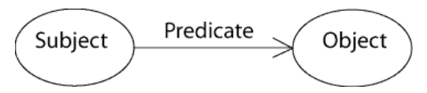
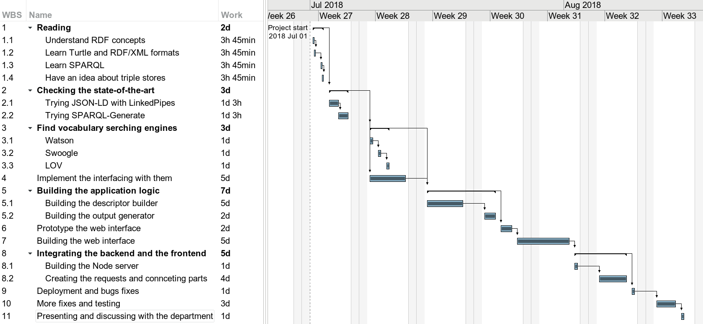
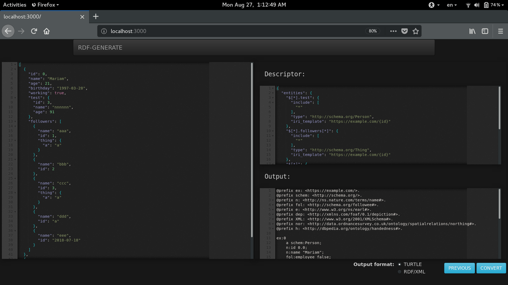

Naheel
Created: 2018-08-27 Mon 10:30
1 Objectives
- Find a mechanism for converting non-structured or semi-structured data (JSON, XML, CSV, etc..) to RDF.
- Investigating the RDF conversion pipeline to identify the main modules.
- Building a tool to automate the conversion.
- Build a user friendly interface.
2 Motivation
- Enrich the Arabic content in the semantic web
- Further process existing data
3 Concepts
3.1 RDF
Resource Description Framework (RDF) is a framework for data representation in the web.
3.1.1 Triples
In RDF data is stored in triples and represented as graphs. Each triple consists of a subject, a predicate, and an object 
3.1.2 Nodes
Nodes can be blank nodes, litrals, or URI references
<http://example.org/#Alice> <http://xmlns.com/foaf/0.1/knows> <http://example.org/#Bob> .

3.2 Representations
3.2.1 RDF/XML
<rdf:RDF xmlns:rdf="http://www.w3.org/1999/02/22-rdf-syntax-ns#" xmlns:foaf="http://xmlns.com/foaf/0.1/"> <rdf:Description rdf:about="http://example.org/#Alice"> <foaf:knows rdf:resource="http://example.org/#Bob"/> </rdf:Description> </rdf:RDF>
3.2.2 Turtle (TTL)
@prefix e: <http://example.org/#> . @prefix foaf: <http://xmlns.com/foaf/0.1/> . e:Alice foaf:knows e:Bob .
4 Timeline

5 Challenges
- Logic
- Third party libraries
- Web APIs
6 Design
| Layer | Architecture |
|---|---|
| Web interface | Presentation |
| Command-line interface | |
| RDF generator | Logic |
| Descriptor builder | |
| Predicates finder | Data |
7 Implementation
7.1 Backend
- Node.js
- JSONPath
- BlueBird
- RDFLib.js
- Express
7.2 Frontend
- JQuery
- Handlebars
- Bootstrap
8 Demo
8.1 Command-line interface
8.1.1 Help
Usage: node main.js [OPTION]... -s, --server start server -i, --in=FILE input file -d, --out_descriptor=FILE out descriptor file -r, --out_rdf=FILE out RDF file -b, --init_base=FILE initial descriptor json file used as a bas... -f, --format=FORMAT out RDF format (ttl, xml) -a, --api=API predicates finding API (lov, swoogle, test) -h, --help display this help and exit Example usage: node main.js -i simple.json -r simple-out.ttl -d simple-des.json --api ...
8.1.2 Sample input
[ { "id": 0, "name": "Alice", "birthday": "1990-01-01" }, { "id": 1, "name": "Bob", "birthday": "1990-01-02" } ]
8.1.3 Usage (step 1)
$ node main.js \ --in ./data/very-simple.json \ --out_descriptor ./data/very-simple-des-base.json
8.1.4 Generated Descriptor
{ "prefixes": { "e": "https://example.com", ... }, "struct": { "$.json.path.to.the.object": { "suggested_predicates": [ { "prefix_name": "e", "predicate": "id", "score": 1.123 }, ... ], "data_types": [ "xsd:string", ... ] ... }, ... }, "entities": { "$.json.path.to.the.other.object": { "include": [ "*" ], "type": "http://schema.org/Thing", "iri_template": "https://example.com/{post.id}" }, ... } }
8.1.5 Usage (step 2)
$ node main.js \ --in ./data/very-simple.json \ --init_base ./data/very-simple-des-base.json \ --out_descriptor ./data/very-simple-des-final.json \ --out_rdf ./data/very-simple-out.ttl
8.1.6 Final Output
@prefix ex: <https://example.com/>. @prefix schem: <http://schema.org/>. @prefix n: <http://ns.nature.com/terms/name>. @prefix ns0: <http://rdfs.org/sioc/ns>. @prefix bir: <http://xmlns.com/foaf/0.1/birthday>. @prefix XML: <http://www.w3.org/2001/XMLSchema>. ex:0 a schem:Thing; n:name "Alice"; ns0:id 0.0; bir:birthday "1990-01-01"^^XML:date. ex:1 a schem:Thing; n:name "Bob"; ns0:id 1.0; bir:birthday "1990-01-02"^^XML:date.
8.2 Web interface

9 Conclusion
- The goal was achieved by having the system functioning correctly
- Future improvements (Local database, Machine learning)